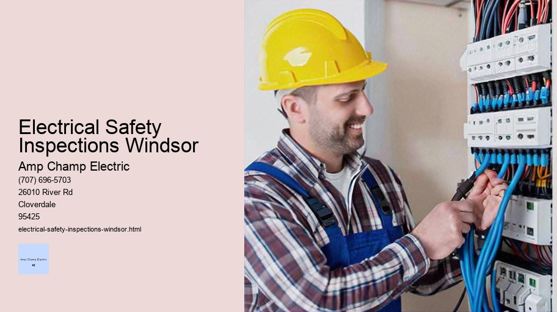

News
Electrical Installation Healdsburg
Electrical Installation Healdsburg
Electrical Installation Santa Rosa
Electrical Installation Cloverdale
Electrical Installation Geyserville
Electrical Installation Windsor
Maintenance and Repair Services Healdsburg
Maintenance and Repair Services Healdsburg
Maintenance and Repair Services Santa Rosa
Maintenance and Repair Services Cloverdale
Maintenance and Repair Services Geyserville
Maintenance and Repair Services Windsor
Electrical Safety Inspections Healdsburg
Electrical Safety Inspections Healdsburg
Electrical Safety Inspections Santa Rosa
Electrical Safety Inspections Cloverdale
Electrical Safety Inspections Geyserville
Electrical Safety Inspections Windsor
Energy Efficiency Upgrades Healdsburg
Energy Efficiency Upgrades Healdsburg
Energy Efficiency Upgrades Santa Rosa
Energy Efficiency Upgrades Cloverdale
Energy Efficiency Upgrades Geyserville
Energy Efficiency Upgrades Windsor
Specialty Electrical Services Healdsburg
Specialty Electrical Services Healdsburg
Specialty Electrical Services Santa Rosa
Specialty Electrical Services Cloverdale
Specialty Electrical Services Geyserville
Specialty Electrical Services Windsor
About Us
Contact Us

Electrical Safety Inspections Windsor
Electrical Supply Stores
Electrical Safety Inspections: Ensuring a Secure and Shock-Free Environment
In the intricate web of modern living, electricity emerges as the lifeline that powers our homes, offices, and industries. It is so integral to our daily existence that its presence often fades into the background—until something goes wrong. Electrical safety inspections are pivotal procedures designed to prevent those moments when electricity reminds us of its potential danger. These inspections serve as proactive checks to ensure electrical systems function within safe parameters, protecting both human lives and property.
Electrical safety inspections are not mere cursory glances at wires and panels; they are comprehensive evaluations conducted by qualified professionals. These electricians or inspectors come armed with expertise, experience, and an arsenal of specialized tools designed to detect any anomalies in electrical installations. The process involves examining wiring, equipment, protective devices such as circuit breakers and fuses, grounding systems, and more.
Electrical Safety Inspections Windsor - Electrical Supply Stores
Why Are Electrical Safety Inspections Critical?
Firstly, these inspections can help identify outdated wiring or deteriorating insulation that could lead to dangerous situations like short circuits or electrical fires. In homes with aging infrastructure or those undergoing renovations, this becomes particularly important for ensuring compatibility between old and new systems.
Secondly, over time wear and tear can compromise the integrity of electrical components leading to potential hazards. Regular inspections provide an opportunity to replace or repair these elements before they fail catastrophically.
Thirdly, safety standards evolve with technological developments; what was considered safe a decade ago might now be deemed inadequate. Inspections ensure compliance with current regulations which are designed not only for safety but also for energy efficiency.
Lastly—and perhaps most significantly—electrical safety inspections provide peace of mind. Knowing that your environment has been professionally evaluated for electrical risks allows you to occupy spaces without fear of unexpected shocks or sparks.
When Should You Schedule an Inspection?
The timing for electrical safety inspections varies depending on several factors including the age of the building, usage patterns of the space involved (residential vs commercial), recent installations or modifications made to the system among others. It’s generally advisable for homeowners to schedule an inspection:
- When purchasing a new property
- If their home is over 25 years old
- After a major renovation
- If experiencing frequent issues like breaker trips or flickering lights
For commercial properties where usage intensity is higher than residential buildings', local codes might dictate regular inspection intervals which must be adhered to strictly not only for compliance but also for insurance purposes.
What Happens During An Inspection?
During an inspection:
1. A visual assessment will be done checking for observable signs such as frayed wires.
2. Testing equipment will be used to measure voltage levels ensuring they match specifications.
3. Protective devices will be checked for proper operation under fault conditions.
4. A thorough check-up ensures all components including outlets and switches operate correctly.
5. The inspector may examine appliance connections verifying whether they meet necessary standards.
6. Finally detailed documentation is provided outlining any issues found along with corresponding recommendations.
Conclusion
Electrical safety inspections stand as guardians against unseen threats lurking within walls and machines around us — threats capable of disrupting lives in profound ways if left unchecked.. By embracing these routine examinations we collectively foster environments where electricity continues serving us silently yet safely keeping its powerful nature firmly harnessed away from harm's reach.. Whether you're flipping on a light switch settling into work at your desk or turning on equipment in your factory remember it's this vigilant approach towards maintenance that keeps the current flowing smoothly enabling progress without peril..
Energy Efficiency Upgrades Healdsburg
Home electrical safety assessments are an essential part of ensuring the safety and well-being of individuals in their living environments. These evaluations are critical because they help to identify potential hazards that could lead to electric shock, fires, and other dangerous situations. This essay will explore the importance of home electrical safety assessments, what they entail, and how homeowners can benefit from them.
Firstly, it is important to understand why home electrical safety assessments are so crucial. Electricity is a powerful force that runs through our homes, powering everything from lights to appliances. However, with this convenience comes inherent risks. Faulty wiring, overloaded circuits, outdated electrical systems—all pose significant dangers that are not always visible or obvious to the untrained eye. Each year, thousands of residential fires are caused by electrical issues, some resulting in injury or even death.
Backup Generators
By conducting regular safety assessments, these risks can be greatly reduced.
An electrical safety assessment typically involves a thorough inspection conducted by a licensed electrician or a certified inspector. During this process, various components of the home's electrical system are checked for compliance with current safety standards and regulations. The assessment includes examining the condition of wires, sockets, switches, and the fuse box (or circuit breaker). It also involves testing ground fault circuit interrupters (GFCIs) to ensure they function correctly—these devices protect against electrocution by shutting off power when a fault is detected.
In addition to these checks, an assessor may look at the age and type of wiring present in the home; older types like knob-and-tube wiring can be particularly hazardous if not properly maintained or updated. They'll also assess whether there's any evidence of overloading or overheating within the system which might suggest that circuits need upgrading due to increased power demands from modern appliances.
Another key aspect of a home electrical safety assessment is verifying proper smoke detector installation and operation as well as ensuring carbon monoxide detectors are correctly placed and functional. Both devices play pivotal roles in alerting occupants to danger early enough for evacuation or corrective action.
For homeowners who might feel daunted by technical aspects associated with electricity in their homes—a sentiment quite understandable given its complexities—a professional assessment provides peace-of-mind knowing that experts have scrutinized their living spaces for potential hazards.
Following an evaluation, homeowners receive detailed reports highlighting areas needing attention along with recommendations for improvements such as repairing damaged outlets or replacing old fixtures with safer alternatives like LED lighting which operates at cooler temperatures reducing fire risks associated with overheating bulbs.
Moreover, staying proactive about one’s domestic electrics doesn’t just mitigate risk—it can also yield financial benefits down the line through energy savings gained via more efficient systems; preventing costly damages arising out unforeseen incidents; reducing insurance premiums since many providers offer discounts for homes deemed lower-risk following professional inspections; increasing property value since updated safe electrics appeal more to prospective buyers should resale be considered later on.
In conclusion—the importance of conducting regular home electrical safety assessments cannot be overstated both for immediate physical protection purposes but also long-term economic considerations alike.
electrical-installation-healdsburg.html
electrical-installation-santa-rosa.html
electrical-installation-cloverdale.html
electrical-installation-geyserville.html
electrical-installation-windsor.html
maintenance-and-repair-services-healdsburg.html
maintenance-and-repair-services-santa-rosa.html
maintenance-and-repair-services-cloverdale.html
maintenance-and-repair-services-geyserville.html
maintenance-and-repair-services-windsor.html
electrical-safety-inspections-healdsburg.html
electrical-safety-inspections-santa-rosa.html
electrical-safety-inspections-cloverdale.html
electrical-safety-inspections-geyserville.html
electrical-safety-inspections-windsor.html
energy-efficiency-upgrades-healdsburg.html
energy-efficiency-upgrades-santa-rosa.html
energy-efficiency-upgrades-cloverdale.html
energy-efficiency-upgrades-geyserville.html
energy-efficiency-upgrades-windsor.html
specialty-electrical-services-healdsburg.html
specialty-electrical-services-santa-rosa.html
specialty-electrical-services-cloverdale.html
specialty-electrical-services-geyserville.html
specialty-electrical-services-windsor.html
privacy-policy.html
sitemap.html
sitemap.xml
about-us.html
feed.xml
Compliance checks with local codes and standards
Title: Navigating the Maze of Local Compliance: A Guide to Ensuring Adherence to Codes and Standards
In the intricate web of construction, renovation, or any project that intersects with public welfare and safety, compliance checks with local codes and standards represent a critical step in ensuring that all facets of the endeavor meet the established norms and regulations. This essay delves into the importance of these checks, outlines their scope, and provides insights into best practices for remaining on the right side of local laws.
The significance of compliance cannot be overstated. At its core, adherence to local codes ensures that structures are safe, sustainable, and accessible. It is not merely a bureaucratic hoop through which one must jump; it serves as a safeguard against potential hazards such as structural failures, fire risks, and health issues stemming from poor sanitation or ventilation. Moreover, compliance protects developers and property owners from legal repercussions that could arise from negligence or ignorance.
Local codes encompass a wide range of considerations --from building materials to fire exits-- each developed in response to specific regional needs influenced by climate, geography, culture, urban planning strategies, population density, historical preservation requirements, and environmental concerns. For instance, earthquake-prone areas have stringent seismic design standards while historic districts may impose restrictions on facade alterations.
Compliance checks begin early in the design process when architects incorporate relevant codes into their blueprints. From thereon outwards every stage of construction is subject to inspection: foundation laying must adhere to soil stability regulations; electrical systems are checked against fire safety measures; plumbing must conform to water conservation efforts; accessibility features are evaluated based on inclusivity guidelines.
Engaging professionals who specialize in code compliance is paramount for navigating this labyrinthine task effectively. These experts possess an up-to-date understanding of local statutes which can frequently undergo revisions as new technologies emerge or societal priorities shift. They also provide crucial services such as variance applications when deviations from standard codes are necessary due to unique project constraints.
For businesses operating across multiple jurisdictions – each with its own set of rules – maintaining compliance becomes exponentially more complex. Large firms often employ dedicated teams responsible for keeping track of varying requirements while smaller outfits might engage external consultants adept at interpreting regional nuances.
To ensure smooth sailing through the compliance process proactive communication with regulatory bodies is advised. Establishing rapport with inspectors can facilitate more collaborative inspections where open dialogue allows for clarification rather than adversarial encounters should discrepancies arise.
Furthermore embracing technology has become increasingly beneficial in managing code conformity personnel tasked with keeping abreast of updates can leverage specialized software solutions designed specifically for tracking changes across different locations streamlining workflows related thereto.
Electrical Supply Stores
Education plays a key role too ongoing training sessions keep staff informed about evolving industry trends which could influence future legislation thus preparing them preemptively for what lies ahead even before official amendments come into effect.
Lastly community involvement adds another layer onto why adhering strictly matters not only does it bolster public perception positively but also encourages civic engagement amongst stakeholders whether they be residents business owners or government officials fostering an environment where everyone cooperates towards shared goals ultimately leading towards betterment overall societal standards living conditions thereof included.
In conclusion rigorous compliance checks although sometimes daunting present opportunities improve upon existing frameworks putting forth structures stand test time both physically metaphorically speaking By investing resources earnestly engaging diverse expertise fields we create safer stronger resilient communities aligned values 21st century demands That essence what makes meticulous attention detail during these inspections absolutely indispensable component modern development endeavors worldwide
Electrical Safety Inspections Windsor - Power Quality Analysis
Smart Home Automation
Outdoor Lighting
Electrical Safety Equipment
Security System Wiring
Motion Sensors
Emergency Electrician
Timer Switches
Testing of GFCI outlets and breakers
Testing of GFCI Outlets and Breakers: Ensuring Electrical Safety in Our Homes
In the realm of electrical safety, Ground Fault Circuit Interrupters (GFCIs) stand as vigilant sentinels, guarding us against the potentially lethal consequences of ground faults. A ground fault occurs when electricity takes an unintended path to the ground—often through a person—which can result in severe injury or even fatality due to electric shock. It is for this reason that testing GFCI outlets and breakers becomes not just a technical task but a critical routine in safeguarding our homes.
The principle behind GFCI protection is straightforward yet ingenious. These devices monitor the balance of electrical current moving through a circuit. If they detect any imbalance, which would suggest that some of the current is leaking out of the system—possibly through a human body—the GFCI quickly cuts off power to that outlet or circuit, often within milliseconds. This rapid response effectively prevents harmful electric shocks.
To ensure these protective devices are functioning correctly, regular testing is essential. Manufacturers typically recommend testing once a month, and here's how it's done:
Testing GFCI Outlets:
1. Locate: Identify your GFCI outlets; these are easily recognizable by their "Test" and "Reset" buttons.
2. Plug-in: Insert a small lamp or appliance into the outlet to check for power.
3. Test Button: Press the "Test" button on the outlet; this should click and cut off power to the plugged-in device, causing it to turn off.
4. Reset Button: After confirming that power has been interrupted, press the “Reset” button to restore power.
5. Double-check: Ensure that your device turns back on after resetting; if it doesn’t, there may be an issue with your GFCI outlet.
Testing GFCI Breakers:
1. Find Your Panel: Go to your electrical panel where your circuit breakers are located.
2.
Electrical Safety Inspections Windsor - Backup Generators
Power Quality Analysis
Smart Home Automation
Outdoor Lighting
Electrical Safety Equipment
Identify Breaker: Look for breakers with a "Test" button - these are your GFCIs.
3. Test Button: Pushing this button should trigger the breaker to flip to an intermediate or off position.
4. Manual Reset: Flip the breaker all the way off then back on again to reset it.
5. Verify Function: Check downstream outlets connected to this breaker using a plug-in tester or appliance for proper operation.
Whilst performing these tests appears simple enough—and indeed they are—it’s crucial not only for ensuring functionality but also peace of mind knowing one’s household is protected from unseen electrical hazards.
It bears mentioning that if you ever encounter an unresponsive test/reset process when engaging with either type of device (outlet or breaker), this could signify malfunction requiring immediate attention from a licensed electrician who can address repairs or replacements as needed.
Moreover, should renovations take place—or if new building codes come into effect—it's imperative homeowners update their existing systems accordingly since older structures might lack sufficient coverage by modern standards.
National Electrical Code (NEC)
In conclusion, while we go about our daily routines rarely giving thought to what lies behind our walls and ceilings beneath layers of paint and plaster lies an intricate network designed with human safety at its core—an unsung hero whose silent vigilance shields us from harm’s way each time we flick a switch or plug in our devices without incident—a testament not only engineering excellence but also our commitment vigilance through simple acts like testing our GFCIs regularly ensuring continued protection against unseen dangers lurking within charge coursing silently beneath fingertips’ reach each day anew.
Inspection of surge protectors and grounding
Title: The Vital Role of Regular Inspection of Surge Protectors and Grounding Systems
In an age where our lives are intricately intertwined with electronic devices, the significance of protecting these devices from electrical surges cannot be overstressed. Surge protectors play a pivotal role in safeguarding our electronics from voltage spikes which can cause irreparable damage. Just as crucial is the grounding system that ensures any excess electricity has a safe path to travel into the earth, thus preventing electrical hazards. It is imperative that both surge protectors and grounding systems undergo regular inspections to maintain their effectiveness and ensure safety.
Surge protectors are often the first line of defense against transient voltages that can harm sensitive electronics. These surges can originate from various sources, such as lightning strikes, power outages, or fluctuations in the power grid. A surge protector works by diverting extra voltage away from connected devices to its grounding wire, thereby neutralizing the potential threat. However, over time and with each surge they absorb, these protective devices can deteriorate or reach their maximum capacity for protection.
Regular inspection of surge protectors involves checking for signs of wear and tear or damage. This includes looking for indicators such as burnt smells, discoloration, or cracks in the housing. Power strips with surge protection should also have an indicator light that confirms they are actively providing protection; if this light is off or blinking erratically, it may signal a problem.
Additionally, it's important to review the joule rating—a measure of energy absorption—of your surge protector periodically. As this rating diminishes over time due to repeated exposure to surges, replacing old units becomes necessary to maintain adequate protection levels for your valued electronics.
Grounding systems form another critical safeguard against electrical accidents by providing a low-resistance pathway for fault currents back to the ground. Inspecting a building's grounding infrastructure typically involves assessing all components including ground rods, connectors, and wiring used to connect electrical circuits to the ground.
Electrical Safety Inspections Windsor - Electrical Supply Stores
National Electrical Code (NEC)
Electrician Training and Certification
National Electrical Code (NEC)
Electrician Training and Certification
National Electrical Code (NEC)
Electrician Training and Certification
National Electrical Code (NEC)
The integrity of connections must be verified since loose or corroded connectors could compromise the pathway for electricity during a fault condition. Ground resistance tests are also essential; they measure how effectively electricity can flow through your grounding system into the earth — high resistance here indicates problems within your grounding setup.
Moreover, visual inspections may reveal damaged insulation on wires leading up to grounding points or signs of rust on metallic parts that need addressing before they affect performance adversely.
For both surge protectors and grounding systems alike:
1.
Smart Home Automation
Check product recalls - Manufacturers sometimes recall defective models.
2. Review installation locations - Ensure no water exposure or physical obstructions could impact functionality.
3. Test operation - Use appropriate testing equipment like multimeters or specialized testers designed specifically for evaluating these systems’ performance.
4.Test reset buttons - Make sure any reset features function correctly following manufacturer’s guidelines.
5.Document findings – Keep records detailing dates of inspections along with any maintenance actions taken so there’s historical data available if issues arise later down the line.
It is worth noting that while homeowners can perform basic checks themselves; consulting certified electricians is advisable especially when dealing with more intricate aspects like ground resistance testing which require specialized knowledge and tools.
In conclusion, consistent inspection practices concerning surge protectors and grounding systems not only prolongs device longevity but more importantly protects users from potential fire risks associated with electrical malfunctions while ensuring compliance with safety codes & standards set forth by relevant authorities — making it an indispensable routine in our digitally-dependent society today.
Evaluation of the overall condition of the electrical system
Title: Comprehensive Assessment of Electrical System Integrity
In the modern world, the electrical system serves as the lifeblood of residential, commercial, and industrial establishments.
Pool and Spa Wiring
It is a complex network designed to distribute and regulate power safely and efficiently to various types of equipment and appliances that are essential for day-to-day activities. Given its critical role, the evaluation of the overall condition of an electrical system is not just prudent; it's imperative.
To understand the importance and process of evaluating an electrical system's condition, one must first recognize that such systems comprise numerous components including power sources, wires, circuits, panels, switches, outlets, protective devices such as circuit breakers and fuses. Over time these components can degrade due to wear-and-tear or external factors like environmental exposure or overuse.
The primary objective in assessing an electrical system is to ensure functionality while prioritizing safety. Neglecting this crucial step can lead to catastrophic consequences such as fire hazards due to short-circuits or overheating, electrocution risks from exposed wiring or malfunctioning equipment and operational failure which could result in significant productivity losses.
A thorough evaluation starts with a visual inspection by qualified professionals who look for overt signs of damage like frayed wires, rust on panel boxes or irregularities in insulation material. This basic check forms the foundation for identifying areas that require closer examination.
Following this initial review comes a series of tests using specialized tools like multimeters which measure voltage levels across different points in the system; clamp meters which detect current flow without direct contact with conductors; insulation resistance testers that identify deteriorations in conductor insulation; ground fault circuit interrupters (GFCI) testers ensuring protection from electric shocks among others.
Another vital aspect considered during an assessment is compliance with relevant codes and standards set forth by institutions such as National Electrical Code (NEC) in the United States. These regulations evolve over time thus periodic reviews help keep systems up-to-date thereby mitigating legal risks associated with non-compliance.
Load analysis also plays a key part wherein experts determine if circuits are being overloaded beyond their safe operating capacity — a common issue especially when older systems encounter new demands placed by contemporary high-power consumption devices.
Moreover documenting historical maintenance records helps evaluators track recurring issues providing insights into potential systemic problems that might need addressing at their root cause rather than mere symptomatic treatment through repairs or component replacements.
Post-evaluation entails compiling findings into detailed reports outlining any detected anomalies along with recommendations for corrective measures whether they be immediate fixes long-term upgrades preventative maintenance schedules etcetera all aimed at optimizing performance while safeguarding against future vulnerabilities.
Lastly investing in regular evaluations has financial merits too since preemptively addressing minor issues often costs less than reactive mending post-failure not to mention avoiding possible revenue losses due to unexpected downtime caused by electrical malfunctions.
In conclusion evaluating an electrical system’s overall condition is more than just ticking off items on a checklist — it's about understanding how each segment interlinks within this dynamic entity continuously striving towards reliability efficiency safety sustainability – all critical elements contributing toward smooth uninterrupted operations whether be at home workplace factory floor public infrastructure et cetera thus highlighting why such assessments are indispensable facets within our electrified world.
About
Windsor
may refer to:
About Windsor
Check our other pages :
Electrical Installation Santa Rosa
Maintenance and Repair Services Geyserville
Energy Efficiency Upgrades Cloverdale
Electrical Safety Inspections Cloverdale
Specialty Electrical Services Geyserville
Frequently Asked Questions
What does an electrical safety inspection entail in Windsor?
An electrical safety inspection in Windsor involves a comprehensive examination of your entire electrical system, including wiring, fixtures, outlets, panels, and appliances. The purpose is to ensure that all components meet the current safety standards set by the Electrical Safety Authority (ESA). It includes checking for proper grounding, the integrity of connections, adequate surge protection, and the absence of potential hazards such as outdated wiring or overloaded circuits.
How often should I have an electrical safety inspection performed on my property?
Its recommended to have an electrical safety inspection at least once every four years for residential properties. For commercial or industrial properties, inspections might be required more frequently due to higher usage demands. Additionally, you should consider an inspection if your property is over 25 years old, if youre purchasing a new home or business location if youve had major renovations done or if youve added significant new appliances.
Who is qualified to perform electrical safety inspections in Windsor?
Only licensed electricians or certified inspectors are qualified to conduct electrical safety inspections in Windsor. They will have the knowledge and experience to identify issues according to Ontarios Electrical Safety Code. Ensure that any professional you hire carries appropriate licensure and insurance coverage for this type of work.
What happens if my property fails the electrical safety inspection?
If your property doesnt pass the inspection, the electrician will provide a detailed report highlighting all areas that need attention. Youll be given a timeline within which repairs must be completed for compliance with local codes and regulations. Once necessary fixes are made by a licensed electrician, a follow-up inspection can confirm that your property meets all required standards for safety certification.
Electrical Safety Inspections Windsor